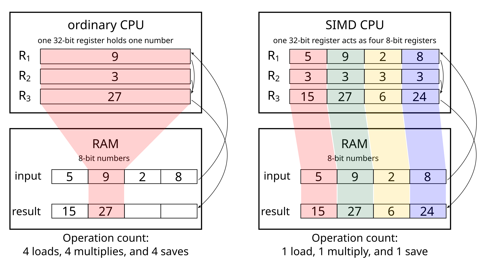

참고한 것들
란?

출처: 위키피디아
- CPU 는 두개의 레지스터를 읽어, 연산을 하고, 그 결과를 하나의 레지스터에 저장할 수 있다.
- 근데 이때 각 레지스터는 하나의 값이 들어간다.
- 따라서 한번에 하나의 데이터를 처리할 수 있고, 이것을 Single Instruction Single Data (SISD) 라고 한다.
- 하지만 이 레지스터를 쪼개 사용해서, 여러개의 데이터를 넣고 연산도 한번에 여러 데이터에 대해 수행할 수 있다면?
- 이 아이디어가 바로 Single Instruction Multiple Data (SIMD) 이다.
- 위 사진의 왼쪽이 SISD 의 예시이다. 레지스터 하나에는 하나의 값이 들어가고, 연산도 하나의 데이터에 대해 이루어 진다.
- 따라서 4개의 값을 곱하는 것은 4번의
load, 4번의muliply, 4번의save가 필요하다.
- 따라서 4개의 값을 곱하는 것은 4번의
- 그리고 오른쪽이 SIMD 의 예시이다. 레지스터 하나에 4개의 값이 들어가고 연산도 이 4개의 데이터에 대해 이루어 진다.
- 따라서 동일한 작업이 1번의
load, 1번의multiply, 1번의save만으로도 가능하다.
- 따라서 동일한 작업이 1번의
- 위 사진의 왼쪽이 SISD 의 예시이다. 레지스터 하나에는 하나의 값이 들어가고, 연산도 하나의 데이터에 대해 이루어 진다.
- 따라서 하나의 레지스터에 여러 값이 들어가기 때문에, 이것을 Vector 라고 표현하기도 한다.
- 그리고 이런 병렬연산을 Vectorization 라고도 부른다.
Instruction set & Registers
- 당연히 CPU architecture 에 따라 다르다. Intel x86 를 기준으로 한번 살펴보자.
| ACRONYM | FULL NAME | YEAR | ARCH | REGISTER SIZE |
|---|---|---|---|---|
| MMX | Matrix Math Extension (비공식) | 1996 | Pentium P5 (1997) | 64bit |
| SSE | Streaming SIMD Extensions | 1999 | Pentium 3 (1999) | 128bit |
| SSE2 | Streaming SIMD Extensions 2 | 2001 | Pentium 4 (2000) | 128bit |
| AVX | Advanced Vector Extensions | 2008 | Sandy Bridge (2011) | 256bit |
| AVX2 | Advanced Vector Extensions 2 | 2013 | Haswell (2013) | 256bit |
- 물론 이후로도 몇개 더 있다. 그건 나중에 필요하면 정리하자 (#draft ).
- 레지스터 사이즈를 자료형에 맞게 쪼개서 사용하면 된다.
- 다만, 여기에 다양한 자료형을 담는 것은 불가능하다.
- 어찌보면 당연한 것; 데이터는 여러개 담겨도 연산은 한번에 한개밖에 못하기 때문이다.
Intrinsics
- Instruction 를 그대로 사용할 수도 있지만 그렇게 하면 너무 힘들자나 그치?
- 그래서 이 instruction 들을 함수 형태로 wrapping 해놓은 intrinsic 을 제공한다.
- Wrapping 한 것이기에 instruction count 는 매우 적긴 하지만, 1개는 아니라고 한다.
- 함수 호출 등의 instruction 이 좀 추가되긴 한다는 듯.
- 물론 여기 소개해놓은 것들은 모두 Intel x86 기준이다.
자료형
- 다음과 같은 형태를 띈다.
__m{register bit 수}{vector 자료형}
- 여기서,
{register bit 수}는 register 의 크기를 의미하고,{vector 자료형}은 그 vector (register 에 들어가는 값들) 의 자료형을 의미한다.
- 가령 AVX 기준으로 다음과 같은 것들이 있다.
| TYPE | DESC. |
|---|---|
__m256 | 실수 (float) |
__m256i | 정수 (int) |
__m256d | 실수 (double) |
함수
- 함수는 다음과 같은 형태를 띈다.
_mm{register bit 수}_{연산}_{vector 원소의 크기와 자료형}
- 각 naming 들을 살펴보자.
{register bit 수}는 마찬가지로 register 의 크기를 의미한다.{연산}에 어떤 연산인지가 설명된다.- 예를 들어
set1은 각 vector 원소를 parameter 값으로 초기화하는 연산이다.
- 예를 들어
{vector 원소의 크기와 자료형}에 vector 원소들이 설명된다.- 가령
epi32의 경우e(원소 각각을 연산),pi(Packed Integer - 정수 vector),32(32bit) 을 의미한다.
- 가령
- 간단하게 몇가지만 보고 가자.
_mm256_set1_epi32: parameter 로 받은 32bit 정수 8개로 register 를 채운다._mm256_storeu_si256: register 의 정수값들 총 265bit 를 memory 로 내린다._mm256_loadu_si256: memory 의 정수값들 총 256bit 를 register 로 올린다.
- 더 많은 함수들과 parameter 설명 등은 Intel 공식 문서 를 참고하자.